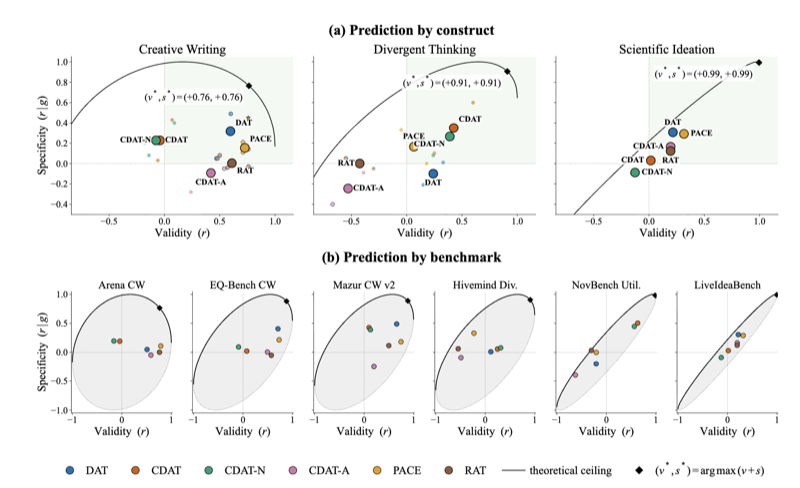

I. Measuring the Creativity of AI

Benchmarks and tests of creativity, especially more complex forms such as transformational and scientific creativity.
- TwistBench: Benchmarking Transformational Creativity in LLMs via Literary Plot Twists Under review, COLM 2026 Workshop on Scientific Understanding of Foundation Models.
- Assessing the Creativity of Large Language Models: Testing, Limits, and New Frontiers Preprint
- Do Semantic Distance Tests Actually Predict Creativity in Large Language Models? Accepted at the ICML 2026 Workshop on Generative AI & Creativity. Under review, NeurIPS.